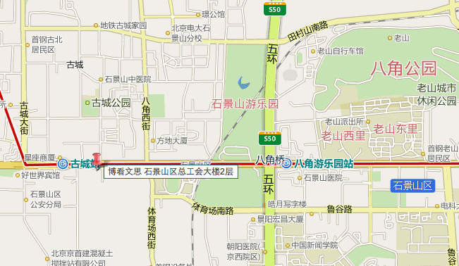

咨询报名电话: 4006-333-186
|
选择博看
博看文思简介
博看文思动态
博看文思优势
博看文思环境
|
3G课程
3G课程
3G课程项目
|
精英师资
师资介绍
在线课程
|
实习文化
实习活动
班级环境
3G培训心得
|
高新就业
就业学员
招聘活动
招聘信息
就业感言
|
研发中心
经典项目
经典开发团队
项目新闻
客户评价
开发优势
业务列表
项目外包流程
|
实训项目
|
联系我们
联系我们
您的位置：首页>> 联系我们
热线电话：
010-82612977(咨询)
400-633-3186
010-68869987(总机)
传真：
010-82612962
邮箱：
info@ibokanwisdom.com
学院地址：
北京石景山区石景山路42号博看文思石景山区总工会大楼2层
公司原址：北京海淀区北四环西路68号（左岸工社11层）

乘车路线：
北京站-公交线路：
线路1：
673路 → 337路 从北京站西站乘坐673路公交车，至前门西站下车（共乘坐3站），换乘337路至石景山古城站下车（共乘坐22站），步行330米至石景山区总工会，上2层至博看文思
线路2：
728路 → 941快 从北京站口东站乘坐728路公交车，至玉泉路口西站下车（共乘坐17站），换乘941快至八角站下车（共乘坐7站），步行300米至石景山区总工会，上2层至博看文思
线路3：
52路 → 337路 从北京站口东站乘坐52路公交车（或 99路,，37路区间， 1路， 728路， 37路， 90内)，至复兴门内站下车（共乘坐5站），换乘337路至石景山古城站下车（共乘坐19站），步行330米至石景山区总工会，上2层至博看文思
线路4：
729路 → 337路 从北京站东站乘坐729路（或692路，20路）至前门站下车（共乘坐5站），步行420米至前门西站，乘坐337路至石景山古城站下车（共乘坐22站），步行330米至石景山区总工会，上2层至博看文思
线路5：
728路 → 941路 从北京站口东站乘坐728路至玉泉路口西站下车（共乘坐17站），换乘941路至石景山古城站下车（共8站），步行450米至石景山区总工会，上2层至博看文思
北京站-地铁线路：
地铁2号线 → 地铁1号线:
从地铁2号线北京站站上车，至复兴门站下车，换成地铁1号线（苹果原方向）至古城站下车（C1东南口出），步行约400米至石景山区总工会，上2层至博看文思
北京站南-公交线路：
线路1：
1. 20路 → 958路 从北京南站乘坐20路公交车（或106路，102路，485路，381路）在永定门长途汽车站下车（共1站），步行1.0公里至陶然亭公园南门站换乘958路，至角门八角站下车（共换乘26站），步行340米至石景山区总工会，上2层博看文思
线路2：
1. 458路 → 958路 从北京南站乘坐458路公交车至菜户营桥西站下车（共乘坐6站），换乘958站至八角站（共乘坐24站），步行340米至石景山区总工会，上2层至博看文思
线路3：
958路 从陶然亭公园南门站乘坐958路公交车至八角站下车（共乘坐26站），步行340米至石景山区总工会，上2层至博看文思
线路4：
. 458路 → 531路 → 354路 从北京南站乘坐458路公交车至丽泽桥站下车（共乘坐10站），换乘531路至吴家村站下车（共乘坐17站），换乘354路至石景山古城站下车（共乘坐8站），步行290米至石景山区总工会，上2层至博看文思
线路5：
1. 458路 → 531路 → 959路 从北京南站乘坐458路公交车至丽泽桥站下车（共乘坐10站），换乘531路至吴家村路东口站下车（共乘坐16站），换乘959路至石景山古城站下车（共乘坐12站），步行330米至石景山区总工会，上2层至博看文思
北京南站-地铁线路
地铁线路1：
地铁4号线 → 地铁1号线 从北京南站乘坐地铁4号线（安河桥北方向）至西单站下车（共乘坐4站），换乘地铁1号线（苹果园方向）至古城站下车（共乘坐11站）（C1东南口出），步行400米至石景山区总工会，上2层至博看文思
地铁线路2：
地铁4号线 → 地铁2号线 → 地铁1号线 从北京南站乘坐地铁4号线（安河桥北方向）至宣武门站下车（共乘坐3站），换乘地铁2号线在复兴门站下车（共乘坐2站），换乘地铁1号线（苹果园方向）在古城站下车（共10站）（C1东南口出），步行400米至石景山区总工会，上2层至博看文思
汽运站公交车路线-八王坟：
线路1：
地铁1号线 步行670米至地铁1号线，乘坐地铁1号线（苹果园方向）至古城站下车（C1东南口出），步行400米至石景山区总工会，上2层至博看文思
线路2：
728路 → 941快 步行790米至八王坟西站，乘坐728路公交车至玉泉路口西站下车（共21站），换乘941快至八角站下车（共乘坐7站），步行300米至石景山区总工会，上2层至博看文思
线路3：
1路 → 337路 步行770米至八王坟西站，乘坐1路公交车至木樨地西站下车（共14站），换乘337路至石景山古城站下车（共乘坐17站），步行330米至石景山区总工会，上2层至博看文思
线路4：
728路 → 941路 步行至790米八王坟西站，乘坐728路公交车至玉泉路口西站下车（共乘坐21站），换乘941路至石景山古城站下车（共乘坐8站），步行450米至石景山总工会，上2层至博看文思
汽运站公交车路线-四惠站：
线路1
地铁1号线 步行700米至四惠站，乘坐地铁1号线（苹果园方向）至古城站下车（C1东南口出），步行400米至石景山总工会，上2层至博看文思
线路2
728路 → 941快 步行730米至四惠站，乘坐728路公交车至玉泉路口西站下车（共乘坐22站），换乘941快至八角站下车（共乘坐7站），步行300米至石景山区总工会，上2层至博看文思
线路3
1路 → 337路 步行650米至四惠站，乘坐1路公交车在木樨地西站下车（共乘坐15站），换乘337路至石景山古城站下车（共乘坐17站），步行330米至石景山总工会，上2层至博看文思
线路4
728路 → 337路 步行730米至四惠站，乘坐728路公交车至军事博物馆站下车（共乘坐14站），换乘337路至石景山古城站下车（共乘坐16站），步行330米至石景山区总工会，上2层至博看文思
线路5
728路 → 941路 步行730米至四惠站，乘坐728路公交车至玉泉路口西站下车（共乘坐22站），换乘941路至石景山古城站下车，步行450米至石景山区总工会，上2层至博看文思
汽运站公交车路线-丽泽桥：
线路1：
483路 → 地铁1号线 步行50米至丽泽桥北站，乘坐483路公交车至公主坟站下车（共乘坐6站），步行130米至公主坟地铁站，乘坐地铁1号线（苹果园方向）至古城站下车（共乘坐6站）（C1东南口出），步行400米至石景山区总工会，上2层至博看文思
线路2：
699路 → 地铁1号线 步行50米至丽泽桥北站，乘坐699路公交车（或617路）至公主坟北站下车（共乘坐4站），步行240米至公主坟站，换乘地铁1号线（苹果园方向）至古城站下车（共乘坐6站）（C1东南口出），步行400米至石景山区总工会，上2层至博看文思
线路3：
969路 → 地铁1号线 步行50米至丽泽桥北站，乘坐969路（或658路，324路）至公主坟南站下车（共乘坐5站），步行310米至公主坟地铁站，乘坐地铁1号线（苹果园方向）至古城站下车（共乘坐6站）（C1东南口出），步行400米至石景山区总工会，上2层至博看文思
线路4：
958路 步行500米至丽泽桥站，乘坐958路公交车至八角站下车（共乘坐21站），步行340米至石景山区总工会，上2层至博看文思
线路5：
531路 → 354路 步行420米至丽泽桥站，乘坐531路公交车至吴家村站下车（共乘坐17站），换乘354路至石景山古城站下车（共乘坐8站），步行290米至石景山区总工会，上2层至博看文思
汽运站公交车路线-莲花池:
线路1：
运通120路 → 地铁1号线步行30米至六里桥东站，乘坐运通120路（或394路）至公主坟站下车（共乘坐3站）步行150米至公主坟地铁站，乘坐地铁1号线（苹果园方向）至古城站下车（共乘坐6站）（C1东南口出），步行400米至石景山区总工会，上2层至博看文思
线路2：
941快 步行110米至六里桥东站，乘坐941快至八角站下车（共乘坐20站），步行300米至石景山区总工会，上2层至博看文思
线路3：
941路 步行20米至六里桥东站，乘坐941路至石景山古城站下车（共乘坐24站），步行450米至石景山区总工会，上2层至博看文思
汽运站公交车路线-赵公口:
线路1：
686路 → 地铁5号线 → 地铁1号线 步行10米至赵公口桥西站，乘坐686路公交车至天坛体育场站下车（共乘坐4站），步行210米至天坛东门地铁站，乘坐地铁5号线（天通苑北方向）至东单站下车（共乘坐3站），换乘地铁1号线（苹果园方向）至古城站下车（共乘坐15站）（C1东南口出），步行400米至石景山区总工会，上2层至博看文思
线路2：
626路 → 地铁1号线 步行150米至赵公口桥西站，乘坐626路公交车至西单路口南站下车（共乘坐12站），步行190米至西单地铁站，乘坐地铁1号线（苹果园方向）至古城站下车（共乘坐11站），（C1东南口出），步行400米至石景山区总工会，上2层至博看文思
线路3：
971路 → 958路 步行10米至赵公口桥西站，乘坐971路公交车至丰台路口站下车（共乘坐11站），步行30米至丰台路口站，乘坐958路至八角站下车（共乘坐15站），步行340米至石景山总工会，上2层至博看文思
友情链接
搜狐
腾讯
WEIPHONE
搜狐
腾讯网
WEIPHONE
动画培训
网易教育
手机软件
动画培训
网易教育
手机软件
动画培训
网易教育
手机软件
动画培训
网易教育
手机软件
在线报名
姓名
QQ
电话
申请资料
报名
版权所有 北京博看文思科技有限责任公司
学院地址：北京石景山区石景山路42号博看文思（石景山区总工会大楼2层）
首页
|
在线报名
|
联系我们